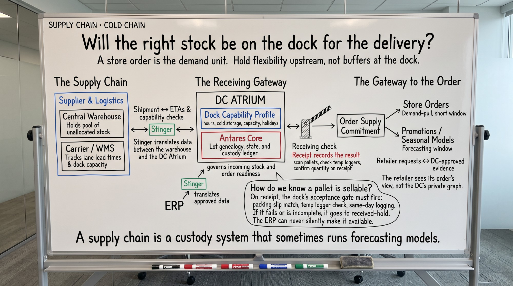
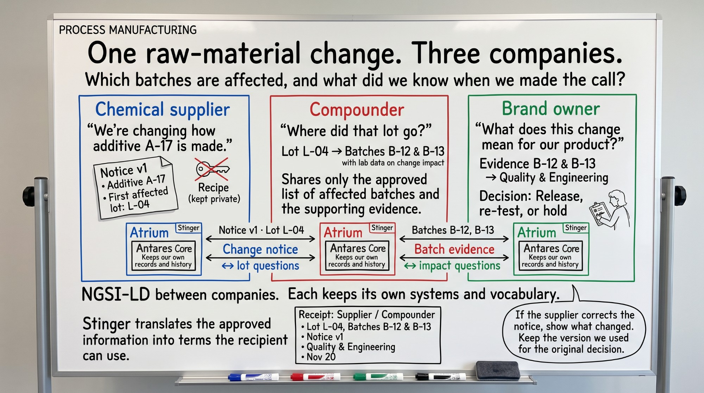
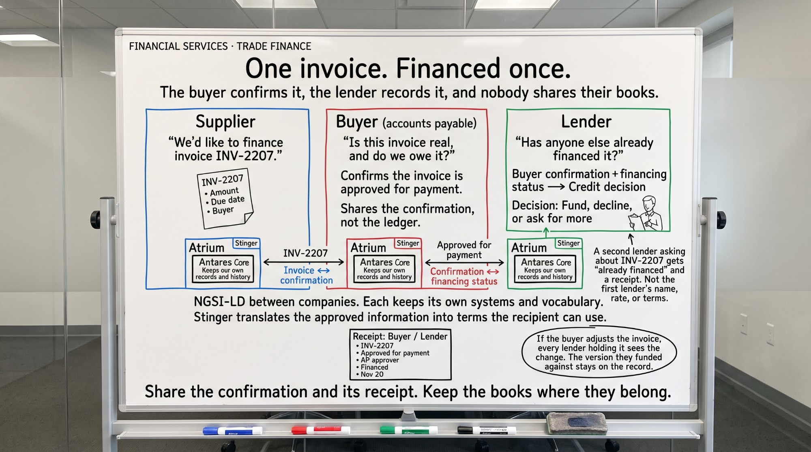
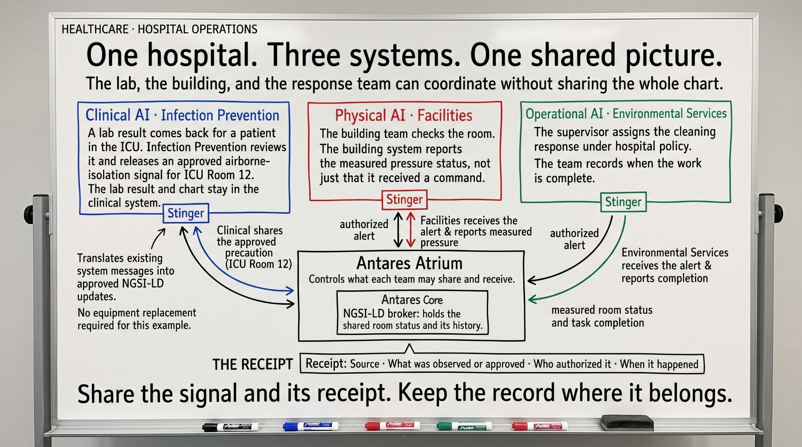
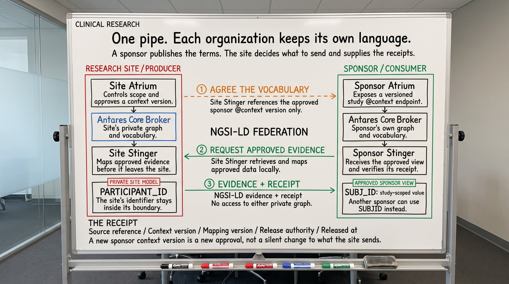

In very different worlds, we see the same problem.
Every system, machine, and device sees only a piece of what's happening. People are left to put the whole picture together by hand.
Why we're building Antares Intelligence
We started by looking at smart cities for ideas we could bring to healthcare and pharmaceutical research. The parallels were hard to miss. At a city intersection, traffic signals, transit systems, and air-quality sensors each report a piece of what's happening. Around a single ICU bed, monitors, pumps, and ventilators do much the same.
In clinical research, even one blood draw can set off a chain of handoffs: a site collects the sample, a courier transports it, a lab processes it, and the study team receives the result. Each step has to be documented, often in a different system, at a different location, and by a different organization.
The challenge is linking those pieces so we can see what's happening now and reconstruct what changed over time.
A shared way to describe what's happening
That search led us to FIWARE and NGSI-LD, an open standard for describing things, their relationships, and how they change over time. A study site, a courier, and a lab can each publish what they know about the same sample. Other systems can ask where it is now, look back at what happened, or be notified when something changes.
The part we still had to build
A shared standard gave us a way to describe the whole picture. It didn't tell us how to get each piece there. We still had to collect updates from different sources, hold them when a network went down, and make sure downstream systems could catch up. As we experimented, too much of that work had to be redone when we moved the workflow from a laptop to an on-premises server or the cloud.
What we are building
Three open-source projects that carry an NGSI-LD workflow from edge to cloud. Built from the ground up in Rust.
-
Antares Core
In progressContext Broker
An NGSI-LD context broker that keeps current state and history. It lets systems ask what's happening now and look back at what changed.
Antares Core on GitHub -
Antares-Atrium
PlannedGovernance
Controls what each partner may share and receive, approves the vocabulary version in use, and lets subscribers replay what they missed.
antares-atrium on GitHub -
Antares-Stinger
PlannedInterface Translator
Stinger translates approved data between source systems and NGSI-LD. It can link an ERP, an existing IoT gateway, or a partner system, and hold updates locally when the network goes down.
antares-stinger on GitHub
How the pieces fit
Every organization already runs systems it trusts, in a vocabulary it chose. Antares doesn't ask anyone to replace those systems or pour their records into a shared database. Each organization keeps its own graph in Antares Core, decides in Atrium what it will share, and lets Stinger translate the approved part into NGSI-LD. What crosses the boundary is the signal and a receipt that says where it came from, who approved it, and when. The five whiteboards below walk that pattern through five industries.
Antares-Atrium and Antares-Stinger are still planned, so the boards show how the projects are designed to work together, not features you can run today.


A distribution center treats its receiving dock as a custody gate. A pallet becomes available only after the acceptance check fires and its receipt is recorded, and the retailer sees evidence for its own order, never the DC's private graph.
Read the board as text
Supply chain · cold chain. Will the right stock be on the dock for the delivery? A store order is the demand unit. Hold flexibility upstream, not buffers at the dock.
The supply chain. Under Supplier & Logistics, a Central Warehouse holds a pool of unallocated stock, and a Carrier / WMS tracks lane lead times and dock capacity. Stinger carries shipments, ETAs, and capability checks between the warehouse and the DC Atrium, translating the data in both directions.
The receiving gateway. The DC Atrium holds a Dock Capability Profile (hours, cold storage, capacity, holidays) and Antares Core, the lot genealogy, state, and custody ledger. It governs incoming stock and order readiness. A second Stinger translates approved data from the ERP.
The gateway to the order. A receiving check stands between the DC Atrium and the Order Supply Commitment: scan pallets, check temp loggers, and confirm quantity on receipt. A receipt records the result. The commitment serves store orders (demand-pull, short window) and promotions and seasonal models (forecasting window). Retailer requests are answered with DC-approved evidence. The retailer sees its order's view, not the DC's private graph.
How do we know a pallet is sellable? On receipt, the dock's acceptance gate must fire: packing slip match, temp logger check, same-day logging. If it fails or is incomplete, it goes to received-hold. The ERP can never silently make it available.
A supply chain is a custody system that sometimes runs forecasting models.


A supplier changes how an additive is made without revealing the recipe. The compounder traces the affected lot to two batches, and the brand owner makes its call with a receipt that records which version of the notice it relied on.
Read the board as text
Process manufacturing. One raw-material change. Three companies. Which batches are affected, and what did we know when we made the call?
Chemical supplier. "We're changing how additive A-17 is made." It issues Notice v1: additive A-17, first affected lot L-04. The recipe is kept private.
Compounder. "Where did that lot go?" Lot L-04 went into batches B-12 and B-13, with lab data on change impact. It shares only the approved list of affected batches and the supporting evidence.
Brand owner. "What does this change mean for our product?" Evidence on B-12 and B-13 goes to Quality and Engineering, who decide to release, re-test, or hold.
Between them. Each company runs its own Atrium, Stinger, and Antares Core, which keeps its own records and history. The supplier and the compounder exchange the change notice and lot questions (Notice v1, lot L-04). The compounder and the brand owner exchange batch evidence and impact questions (batches B-12 and B-13). NGSI-LD runs between the companies, each keeps its own systems and vocabulary, and Stinger translates the approved information into terms the recipient can use.
Receipt. Supplier / Compounder: lot L-04, batches B-12 and B-13, Notice v1, Quality and Engineering, Nov 20.
"If the supplier corrects the notice, show what changed. Keep the version we used for the original decision."


A supplier wants to finance an invoice. The buyer confirms it's owed, the lender records the financing, and a second lender learns only that the invoice is already financed, with a receipt and none of the first lender's terms.
Read the board as text
Financial services · trade finance. One invoice. Financed once. The buyer confirms it, the lender records it, and nobody shares their books.
Supplier. "We'd like to finance invoice INV-2207." The invoice carries an amount, a due date, and the buyer.
Buyer (accounts payable). "Is this invoice real, and do we owe it?" It confirms the invoice is approved for payment and shares the confirmation, not the ledger.
Lender. "Has anyone else already financed it?" The buyer's confirmation and the financing status feed the credit decision: fund, decline, or ask for more. A second lender asking about INV-2207 gets "already financed" and a receipt, not the first lender's name, rate, or terms.
Between them. Each company runs its own Atrium, Stinger, and Antares Core, which keeps its own records and history. The supplier and the buyer exchange the invoice and its confirmation. The buyer and the lender exchange the approval for payment and the financing status. NGSI-LD runs between the companies, each keeps its own systems and vocabulary, and Stinger translates the approved information into terms the recipient can use.
Receipt. Buyer / Lender: INV-2207, approved for payment, AP approver, financed, Nov 20.
"If the buyer adjusts the invoice, every lender holding it sees the change. The version they funded against stays on the record."
Share the confirmation and its receipt. Keep the books where they belong.


An isolation precaution moves from infection prevention to facilities and environmental services. The lab result and chart stay in the clinical system. What moves is the approved precaution, the measured room pressure, and the record of completed cleaning.
Read the board as text
Healthcare · hospital operations. One hospital. Three systems. One shared picture. The lab, the building, and the response team can coordinate without sharing the whole chart.
Clinical AI · Infection Prevention. A lab result comes back for a patient in the ICU. Infection Prevention reviews it and releases an approved airborne-isolation signal for ICU Room 12. The lab result and chart stay in the clinical system. Its Stinger translates existing system messages into approved NGSI-LD updates. No equipment replacement is required for this example.
Physical AI · Facilities. The building team checks the room. The building system reports the measured pressure status, not just that it received a command. Facilities receives the authorized alert and reports measured pressure.
Operational AI · Environmental Services. The supervisor assigns the cleaning response under hospital policy. The team records when the work is complete. Environmental Services receives the authorized alert and reports completion.
Antares Atrium. Controls what each team may share and receive. Inside it, Antares Core, the NGSI-LD broker, holds the shared room status and its history: the approved precaution, the measured room status, and task completion.
The receipt. Source, what was observed or approved, who authorized it, and when it happened.
Share the signal and its receipt. Keep the record where it belongs.


A research site and a sponsor each keep their own vocabulary. They agree on a versioned @context, the site maps only approved evidence, and every release carries a receipt naming the context and mapping versions it used.
Read the board as text
Clinical research. One pipe. Each organization keeps its own language. A sponsor publishes the terms. The site decides what to send and supplies the receipts.
Research site / producer. Site Atrium controls scope and approves a context version. The Antares Core broker holds the site's private graph and vocabulary. Site Stinger maps approved evidence before it leaves the site. In the private site model, PARTICIPANT_ID is the site's identifier, and it stays inside the site's boundary.
Sponsor / consumer. Sponsor Atrium exposes a versioned study @context endpoint. The Antares Core broker holds the sponsor's own graph and vocabulary. Sponsor Stinger receives the approved view and verifies its receipt. In the approved sponsor view, SUBJ_ID is a study-scoped value. Another sponsor can use SUBJID instead.
NGSI-LD federation. First, agree the vocabulary: Site Stinger references the approved sponsor @context version only. Second, request approved evidence: Site Stinger retrieves and maps approved data locally. Third, evidence and receipt: NGSI-LD evidence travels with its receipt, with no access to either private graph.
The receipt. Source reference, context version, mapping version, release authority, and release time. A new sponsor context version is a new approval, not a silent change to what the site sends.